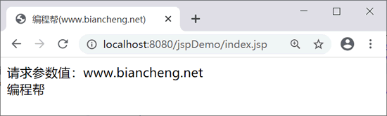
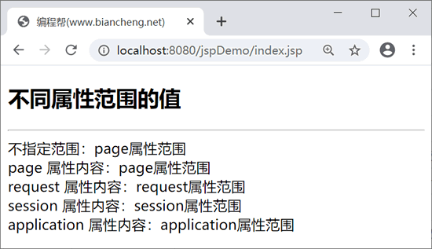
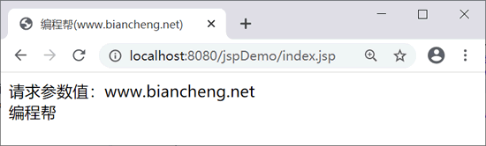

EL表达式完全攻略
之前的 JSP 页面中，我们经常使用 JSP 表达式来输出变量或者页面之间传递的参数，大大降低了页面的可读性。
为了简化 JSP 页面，JSP 2.0 新增了 EL（Expression Language）表达式语言。EL 提供了更为简洁、方便的形式来访问变量和参数，不仅可以简化 JSP 页面代码，还会使开发者的逻辑变得更加清晰 。
EL 表达式定义了许多运算符，如算术运算符、比较运算符、逻辑运算符等，使用这些运算符，可以使 JSP 页面更加简洁。
注意：EL 的
EL 表达式中还可以使用
运行结果如下：
从以上方法可以看出，EL 表达式可以输出 4 种属性范围的内容。如果在不同的属性范围中设置了同一个属性名称，则按照 page、request、session、application 的顺序依次查找。我们也可以指定要取出哪一个范围的变量，例如：
运行结果如下：
表单的 action 属性也是一个 EL 表达式。${pageContext.request.contextPath} 等价于 <%=request.getContextPath()%>，意思就是取出部署的应用程序名，或者是当前的项目名称。本例中项目名称是 jspDemo，因此 ${pageContext.request.contextPath} 或 <%=request.getContextPath()%> 就等于
index.jsp 页面代码如下：
运行结果如下：

login.jsp运行结果

index.jsp运行结果
index.jsp 代码如下：
运行结果如下所示：
login.jsp运行结果
index.jsp运行结果
为了简化 JSP 页面，JSP 2.0 新增了 EL（Expression Language）表达式语言。EL 提供了更为简洁、方便的形式来访问变量和参数，不仅可以简化 JSP 页面代码，还会使开发者的逻辑变得更加清晰 。
EL表达式的语法
EL 表达式语法如下：${EL表达式}
EL 表达式语法以${开头，以}结束，中间为合法的表达式。示例
${param.name} 表示获取参数 name 的值，它等同于 <%=request.getParameter('name') %>。从形式和语法上可以看出，EL 表达式简化了 JSP 原有的表达式。在实际开发中，EL 表达式也是经常使用的方式。EL 表达式定义了许多运算符，如算术运算符、比较运算符、逻辑运算符等，使用这些运算符，可以使 JSP 页面更加简洁。
EL算术运算符
算术运算符用来进行加、减、乘、除和求余，EL 表达式算术运算符如下：| EL算术运算符 | 说明 | 范例 | 结果 |
|---|---|---|---|
| + | 加 | ${5+2} | 7 |
| - | 减 | ${5-2} | 3 |
| * | 乘 | ${5*2} | 10 |
| / 或 div | 除 | ${5/2} | 2 |
| % 或 mod | 求余 | ${5%2} | 1 |
注意：EL 的
+运算符与 Java 的+运算符不一样，它无法实现两个字符串的连接运算。如果该运算符连接的两个值不能转换为数值型的字符串，则会拋出异常；反之，EL 会自动将这两个字符转换为数值型数据，再进行运算。EL 表达式中还可以使用
( ) 改变优先级，例如：${2+3*2} 等于 8，${(2+3)*2} 等于 10。
EL比较运算符
比较运算符用来实现两个表达式的比较，进行比较的表达式可以是数值型或字符串。EL 表达式比较运算符如下：| EL比较运算符 | 说明 | 范例 | 结果 |
|---|---|---|---|
| == 或 eq | 等于 |
${6==6} 或 ${6 eq 6} ${"A"="a"} 或 ${"A" eq "a"} |
true false |
| != 或 ne | 不等于 |
${6!=6} 或 ${6 ne 6} ${“A"!=“a”} 或 ${“A” ne “a”} |
false true |
| < 或 lt | 小于 |
${3<8} 或 ${3 lt 8} ${"A"<"a"} 或 ${"A" lt "a"} |
true true |
| > 或 gt | 大于 |
${3>8} 或 ${3 gt 8} ${"A">"a"} 或 ${"A" gt "a"} |
false false |
| <= 或 le | 小于等于 |
${3<=8} 或 ${3 le 8} ${"A"<="a"} 或 ${"A" le "a"} |
true true |
| >= 或 ge | 大于等于 |
${3>=8} 或 ${3 ge 8} ${"A">="a"} 或 ${"A" ge "a"} |
false false |
EL逻辑运算符
逻辑运算符两边的表达式必须是布尔型（Boolean）变量，其返回结果也是布尔型（Boolean）。EL 表达式逻辑运算符如下：| EL逻辑运算符 | 说明 | 范例 | 结果 |
|---|---|---|---|
| && 或 and | 与 | ${2>1&&3<4 } 或 ${2>1and3<4 } | true |
| || 或 or | 或 | ${2<1||3>4} 或 ${2<1or3>4} | false |
| ! 或 not | 非 | ${!(2>4)} 或 ${not (2>4)} | true |
EL其它运算符
1）. 和 [ ]
. 和 [ ] 是 EL 中最常用的运算符，用来访问 JavaBean 中的属性和隐式对象的数据。一般情况下，. 用来访问 JavaBean 属性或 Map 类型的值，[ ] 用来访问数组或者列表的元素。2）empty
empty 用来判断 EL 表达式中的对象或者变量是否为空。若为空或者 null，返回 true，否则返回 false。3）条件运算符
EL 表达式中，条件运算符的语法和 Java 的完全一致，如下：${条件表达式?表达式1:表达式2}
其中，条件表达式用于指定一个判定条件，该表达式的结果为 boolean 类型。如果该表达式的运算结果为 true，则返回表达式 1 的值；反之，返回表达式 2 的值。示例
运算符演示如下：
- <%@ page language="java" contentType="text/html; charset=UTF-8"
- pageEncoding="UTF-8" import="net.biancheng.*,java.util.*"%>
- <!DOCTYPE html>
- <html>
- <head>
- <title>编程帮(www.biancheng.net)</title>
- </head>
- <body>
- <h4>.运算符</h4>
- <%
- Site site = new Site();
- site.setName("编程帮");
- site.setUrl("www.biancheng.net");
- session.setAttribute("site", site);
- %>
- 欢迎来到${site.name}，我们的网址是：${site.url}
- <h4>[]运算符</h4>
- <%
- List tutorials = new ArrayList();
- tutorials.add("Java");
- tutorials.add("Python");
- session.setAttribute("tutorials", tutorials);
- HashMap siteMap = new HashMap();
- siteMap.put("one", "编程帮");
- siteMap.put("two", "C语言中文网");
- session.setAttribute("site", siteMap);
- %>
- tutorials 中的内容：${tutorials[0]}，${tutorials[1]}
- <br> siteMap 中的内容：${site.one}，${site.two}
- <h4>empty和条件运算符</h4>
- <!-- 当 cart 变量为空时，输出购物车为空，否则输出cart -->
- <%
- String cart = null;
- %>
- ${empty cart?"购物车为空":cart}
- </body>
- </html>
EL运算符优先级
在 EL 表达式中，多种运算符混合运算时，优先级如下表所示（由高至低，由左至右）。| 序号 | 优先级 |
|---|---|
| 1 | [] . |
| 2 | () |
| 3 | -（负）、not、! 、empty |
| 4 | * 、 / 、 div 、% 、mod |
| 5 | +、-（减） |
| 6 | <、>、<=、>=、lt、gt、le、ge |
| 7 | ==、!-、eq、ne |
| 8 | &&、and |
| 9 | ||、or |
| 10 | ${A?B:C} |
EL保留字
保留字是系统预留的名称。在为变量命名时，应该避开这些预留的名称，以免程序编译时发生错误。EL 表达式的保留字如下表所示。| lt | le | gt | ge |
| eq | ne | true | false |
| and | or | not | instanceof |
| div | mod | empty | null |
禁用EL表达式
如果不想使用 EL 表达式，可以禁用 EL 表达式。禁用 EL 表达式有以下 3 种方法：1）禁用单个EL表达式
在 EL 表达式前加\，例如：
\${2+3}
页面输出：${2+3}
2）禁用当前页面的EL表达式
将 page 指令中的 isELIgnored 属性设置为 true，如下：<%@ page isELIgnored="true" %>
3）禁用整个Web应用的EL表达式
在 web.xml 中配置 <el-ignored> 元素，如下：
- <jsp-property-group>
- <url-pattern>*jsp</url-pattern>
- <el-ignored>false</el-ignored>
- </jsp-propery-group>
EL内置对象
为了显示方便，EL 表达式语言提供了许多内置对象，可以通过不同的内置对象来输出不同的内容。EL 表达式内置对象如下：| 内置对象 | 说明 |
|---|---|
| pageScope | 获取 page 范围的变量 |
| requestScope | 获取 request 范围的变量 |
| sessionScope | 获取 session 范围的变量 |
| applicationScope | 获取 application 范围的变量 |
| param | 相当于 request.getParameter(String name)，获取单个参数的值 |
| paramValues | 相当于 request.getParameterValues(String name)，获取参数集合中的变量值 |
| header | 相当于 request.getHeader(String name)，获取 HTTP 请求头信息 |
| headerValues | 相当于 request.getHeaders(String name)，获取 HTTP 请求头数组信息 |
| initParam | 相当于 application.getInitParameter(String name)，获取 web.xml 文件中的参数值 |
| cookie | 相当于 request.getCookies()，获取 cookie 中的值 |
| pageContext | 表示当前 JSP 页面的 pageContext 对象 |
从以上方法可以看出，EL 表达式可以输出 4 种属性范围的内容。如果在不同的属性范围中设置了同一个属性名称，则按照 page、request、session、application 的顺序依次查找。我们也可以指定要取出哪一个范围的变量，例如：
${pagesScope.name}，表示取出 page 范围的 name 变量。例 1
EL 表达式获取 4 种不同范围的属性，代码如下：
- <%@ page language="java" contentType="text/html; charset=UTF-8"
- pageEncoding="UTF-8"%>
- <!DOCTYPE html>
- <html>
- <head>
- <title>编程帮(www.biancheng.net)</title>
- </head>
- <body>
- <%
- pageContext.setAttribute("info", "page属性范围");
- request.setAttribute("info", "request属性范围");
- session.setAttribute("info", "session属性范围");
- application.setAttribute("info", "application属性范围");
- %>
- <h2>不同属性范围的值</h2>
- <hr />
- 不指定范围：${info}
- <br> page 属性内容：${pageScope.info}
- <br> request 属性内容：${requestScope.info}
- <br>session 属性内容：${sessionScope.info}
- <br>application 属性内容：${applicationScope.info}
- </body>
- </html>

例 2
下面演示 param、paramValues 的使用方法，login.jsp 代码如下：
- <%@ page language="java" contentType="text/html; charset=UTF-8"
- pageEncoding="UTF-8"%>
- <!DOCTYPE html>
- <html>
- <head>
- <title>编程帮(www.biancheng.net)</title>
- </head>
- <body>
- <%
- request.setCharacterEncoding("UTF-8");
- %>
- <form action="${pageContext.request.contextPath}/index.jsp" method="post">
- 网站名称: <input type="text" name="name" value="编程帮" /> <br>
- <input type="text" name="name" value="C语言中文网" /> <br>
- <input type="text" name="name" value="百度" /> <br>
- 网址: <input type="text" name="url" value="www.biancheng.net" /> <br>
- <input type="submit" value="提交" />
- </form>
- </body>
- </html>
/jspDemo。实际项目中应该这样写：${pageContext.request.contextPath}/login.jsp。index.jsp 页面代码如下：
- <%@ page language="java" contentType="text/html; charset=UTF-8"
- pageEncoding="UTF-8"%>
- <!DOCTYPE html>
- <html>
- <head>
- <title>编程帮(www.biancheng.net)</title>
- </head>
- <body>
- <%
- request.setCharacterEncoding("UTF-8");
- %>
- 请求参数值：${param.url}
- <br> ${paramValues.name[0]}
- </body>
- </html>
login.jsp运行结果

index.jsp运行结果
例 3
下面演示 cookie 的使用方法。login.jsp 代码如下：
- <%@ page language="java" contentType="text/html; charset=UTF-8"
- pageEncoding="UTF-8"%>
- <!DOCTYPE html>
- <html>
- <head>
- <title>编程帮(www.biancheng.net)</title>
- </head>
- <body>
- <%
- response.addCookie(new Cookie("name", "编程帮"));
- %>
- <a href="index.jsp">跳转到index.jsp页面</a>
- </body>
- </html>
- <%@ page language="java" contentType="text/html; charset=UTF-8"
- pageEncoding="UTF-8"%>
- <!DOCTYPE html>
- <html>
- <head>
- <title>编程帮(www.biancheng.net)</title>
- </head>
- <body>
- ${cookie.name.value }
- </body>
- </html>
login.jsp运行结果
index.jsp运行结果
关注微信公众号「站长严长生」，在手机上阅读所有教程，随时随地都能学习。本公众号由C语言中文网站长运营，每日更新，坚持原创，敢说真话，凡事有态度。

微信扫描二维码关注公众号